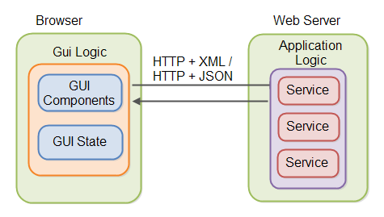

XHR-запросы в Angular
 Максим Сальников
ForgeRock
Максим Сальников
ForgeRock
Архитектура веб-приложения
Асинхронность в вебе
Промисы (Promises) в AngularJS
Модуль $http
Примеры запросов
Websockets в AngularJS
Архитектура веб-приложения
Архитектура веб-приложения

XMLHttpRequest
API, доступное в скриптовых языках браузеров, таких как JavaScript. Использует запросы HTTP или HTTPS напрямую к веб-серверу и загружает данные ответа сервера напрямую в вызывающий скрипт
Проблемы
- UI не должен ждать ответ от сервера
- Проблема в JS - код превращается кучу колбеков
Проблемы

Промисы (Promises) в AngularJS
Промисы (Promises) в AngularJS
предоставляют интерфейс для взаимодействия с объектами, содержащими результат выполнения некоторой операции, время окончания которой неизвестно.
предоставляют удобный способ организации асинхронного кода
Что в AngularJS возвращает promise?
- $http — сервис для выполнения AJAX-запросов
- $timeout — AngularJS-обертка над setTimeout;
- различные методы $q — сервиса для создания своих deferred-объектов и promise-ов.
Сервис $http
Сервис $http является базовым сервисом Angular, который используется для коммуникаций с удаленным HTTP сервером с помощью браузерного объекта XMLHttpRequest или JSONP
Подключение
.factory('AppService', function($http) {
...
});
Базовый вариант
$http({
method: 'GET',
url: '/someUrl'
}).then(function successCallback(response) {
// ОК
}, function errorCallback(response) {
// Не ОК
});
Сокращения
$http.get
$http.head
$http.post
$http.put
$http.delete
$http.jsonp
$http.patch
Websockets в AngularJS
angular-websocket
Высокоуровневая библиотека для работы с Websockets в AngularJS
https://github.com/AngularClass/angular-websocket
npm install angular-websocket --save
Подключение
angular.module('PokemonApp', [ngWebSocket']);
Подключение
factory('MySocket', function($websocket) {
var ws = $websocket('ws://...');
...
return {
...
};
});
Использование
.controller('RealtimeCtrl', function($scope, MySocket) {
...
$scope.MySocket = MySocket;
Socket.io
Для работы с соответствующим backend
npm install socket.io
npm install angular-socket-io
Практика:
https://github.com/webmaxru/netology-angular-pokemons/tree/xhr
Добавить лоадеры в список покемонов и ягод
Зарегистрироваться на Backendless.com, создать приложение, переподключить на свои application-id и secret-key (https://backendless.com)
Установить эти два заголовка через $http.defaults.headers (для всех запросов) (http://angular-doc.herokuapp.com/api/ng.$http)
Сделать интерфейс редактирования покемона (на основе createPokemon) и сделать запрос PUT при клике на Сохранить (подключать backend не нужно)
Практика:
(зачет с отличием) Переделать вывод списка покемонов я ягод таким образом, чтобы они отображались только при полной загрузке обоих списков, используя $q.all(...) (https://habrahabr.ru/post/189084/)
Как предоставить код домашней работы на проверку
Способы предоставить домашнее задание в порядке приоритета:
- Исходный код на
BitBucket
или
GitHub
- Код в
CodePen
или
JSFiddle
Задавайте вопросы!
Максим Сальников